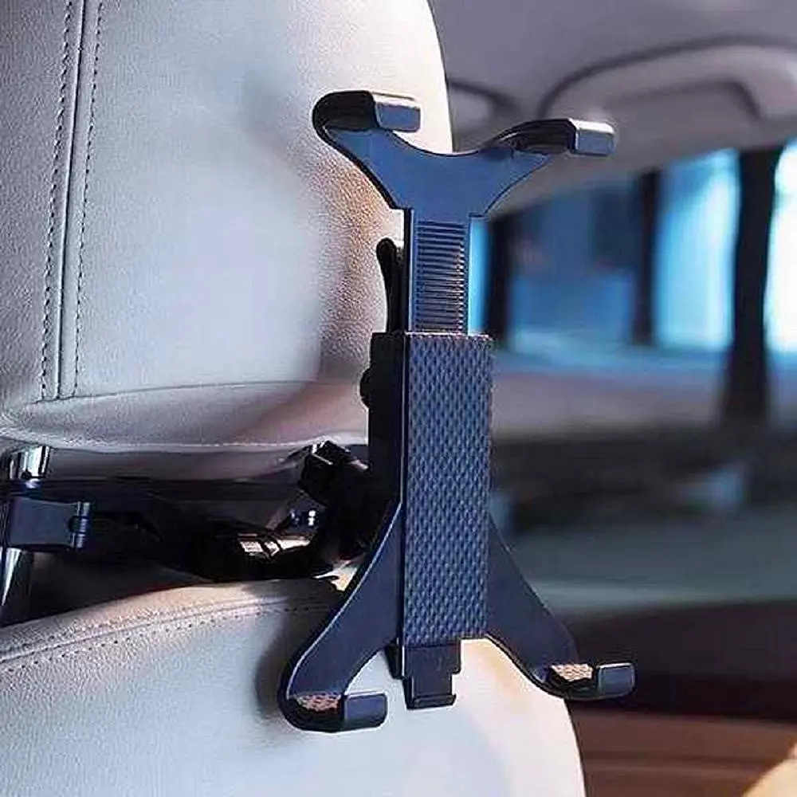
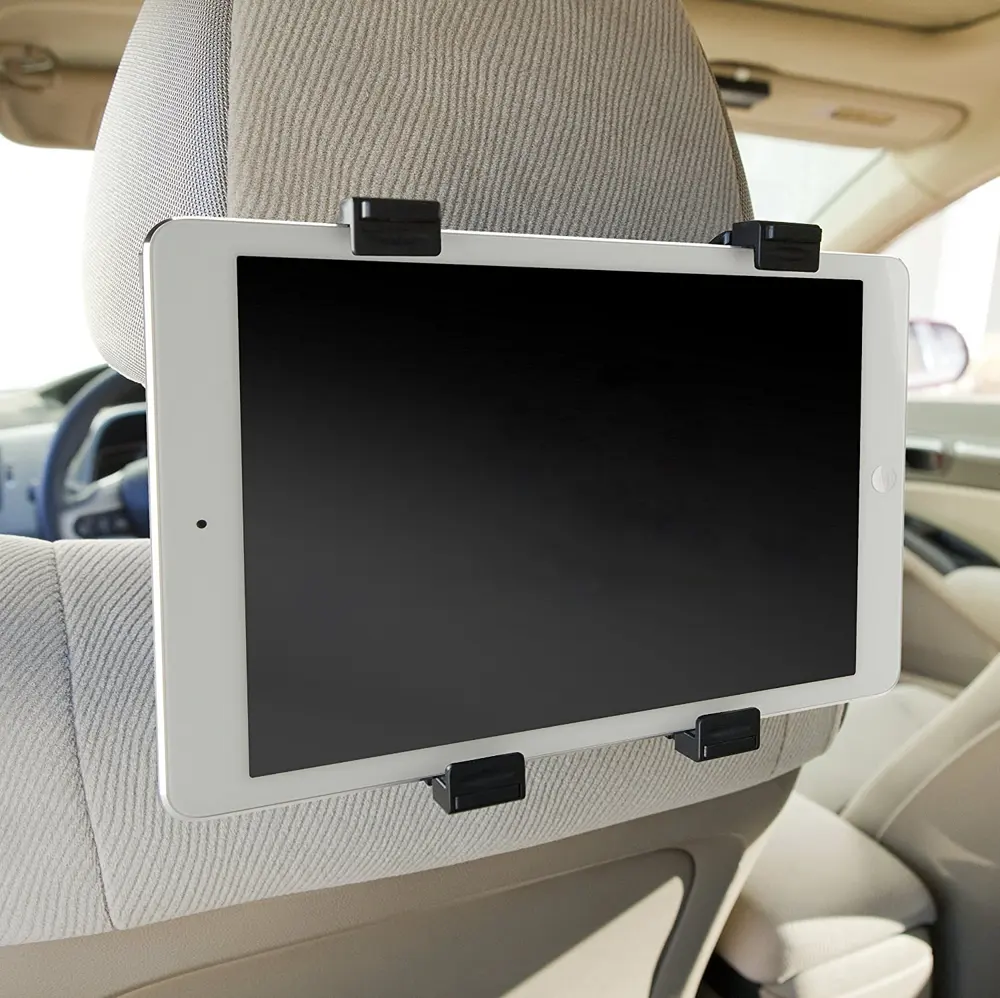
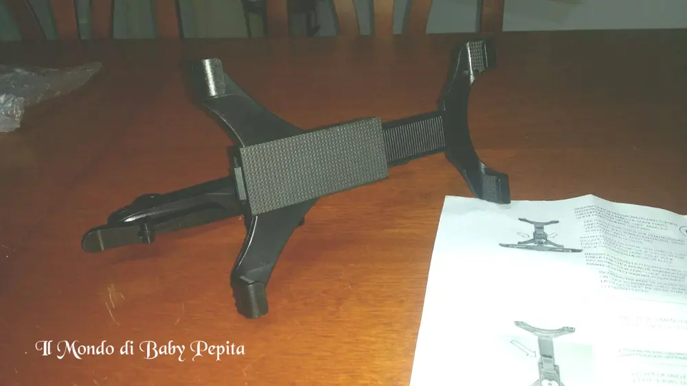
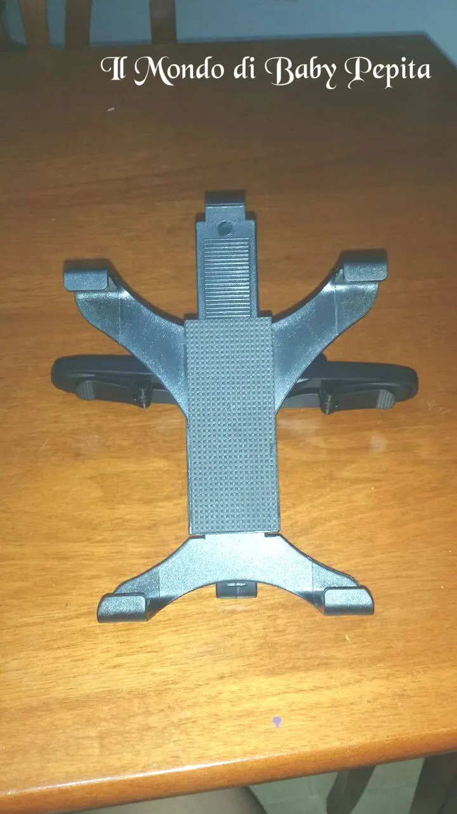

Cybmedia - Supporto da Auto Universale per Tablet
 Salve. . Oggi parliamo di un prodotto innovativo per chi è sempre in viaggio ed ha i passeggeri a bordo.Adatto per grandi e piccini, per ammazzare il tempo e la durata del viaggio è bello per i grandi guardare un bel film, per i piccini tenerli occupati con i cartoni animati.
Salve. . Oggi parliamo di un prodotto innovativo per chi è sempre in viaggio ed ha i passeggeri a bordo.Adatto per grandi e piccini, per ammazzare il tempo e la durata del viaggio è bello per i grandi guardare un bel film, per i piccini tenerli occupati con i cartoni animati. Parliamo di un supporto da auto universale per i tablet.Come vedete in foto, è semplice da montare.E' infatti di facile installazione al sediolino anteriore.
Parliamo di un supporto da auto universale per i tablet.Come vedete in foto, è semplice da montare.E' infatti di facile installazione al sediolino anteriore.


Questo supporto tablet si può facilmente ruotare o inclinare in qualsiasi angolazione per essere collocato nella posizione esatta per una una migliore visualizzazione.

Colore nero e compatibile non solo ai tablet ma anche ad IPad, ebook e mini pc.

PREZZO: 15,90€

Per acquistarlo:https://www.amazon.it/Color-Universale-poggiatesta-regolabili-dimensioni/dp/B01E71ZQJC/ref=pd_bxgy_201_img_2?ie=UTF8&psc=1&refRID=TCK4K6J0C1CPP1MHC0HH
Per me invece seguitemi su:
FACEBOOKINSTAGRAMTWITTER